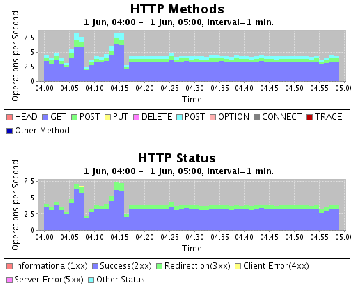

ネットワークトラフィック解析ソフトウェア inMon
ネットワーク管理者必見、ネットワークトラフィック解析ソフトinMonは
1G/10Gの高速ネットワークをプロトコルレベルでリアルタイムに解析できます。
アプリケーションパフォーマンス
Application sFlow
Traffic Sentinelは、アプリケーション・パフォーマンスの分析のためのツールを、いくつも備えています。
Application sFlow
- トランザクションのサンプル
- トランザクションの統計
- TCP/UDP socket
【例】
NFS/CIFS transactions- File path, bytes, response time, socket
- HTTP requests
- URL, user agent, mime type, bytes response time, socket
- Memcached lookups
- Key, value-bytes, hit/miss, socket
- Database queries
- Query#, response time, socket

アプリケーション・レイヤーの測定は、インフラ内の各コンポーネントの
パフォーマンスと関連付けるとき、さらに重要です。